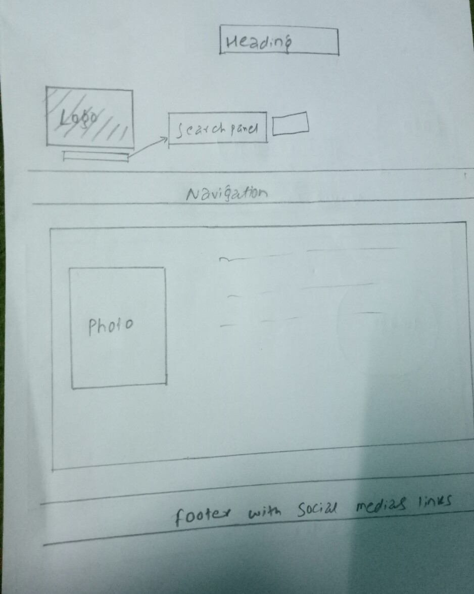
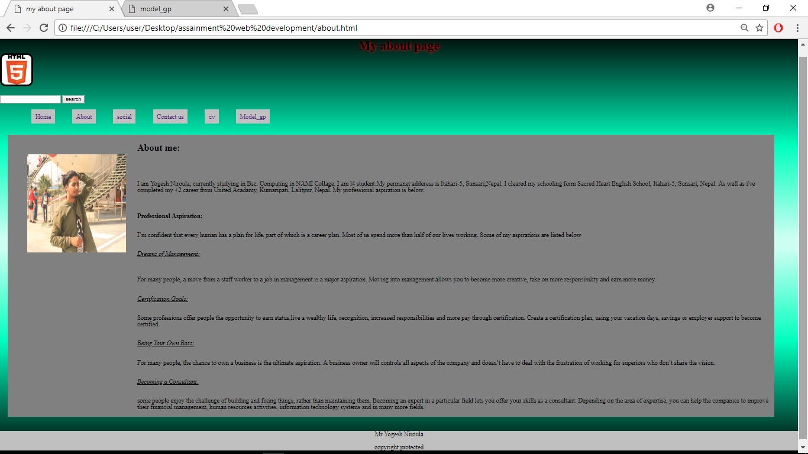

CONTENTS:
INTRODUCTION
WIREFRAMES:
Wireframe for Homepage:
Wireframe for Aboutpage:
Wireframe for Contactpage:
Wireframe for CVpage:
WEBPAGES SCREENSHOT:
Home page
About page
Social page
Contact us page
CV page
VALIDATION
CONCLUSION
REFERENCES
This is the report of the Web Development project. This project was done using HTML and CSS. Here we had to make 6 different webpages for different links. Here i have presented wireframes, mock-ups and screenshots as well as validations and conclusions including references. Though it was a tough task, i have managed to make all the contents.
Mock-up is a scale or full-size model of a design or device, used for teaching, demonstration, design evaluation, promotion, and other purposes. A mockup is a prototype if it provides at least part of the functionality of a system and enables testing of a design.
The mock ups of different web pages are given below:
Mock-up for Home page:
Mock-up for About page:

Mock-up for Social page:
Mock-up for Contact us page:
Mock-up for CV page:
Wireframe is also known as a page schematic or screen blueprint, is a visual guide that represents the skeletal framework of a website. The wireframes of different webpages are below.
Wireframe for homepage:
Wireframe for About page:
Wireframe for Social page:
Wireframe for Contact us page:
Wireframe for CV page:
screenshot of homepage:
screenshot of About page:
screenshot of Social page:
screenshot of Contact us page:

screenshot of CV page:
VALIDATION:
Validation means to make errors free. I have validate all my web pages. But they contains some errors which I have presented below
Validation of the Home page:

Validation of about page:

Validation of Social page:
Validation of Cv page:

CONCLUSION:
While making of the web pages, there were many difficulties as well as it was a good time. This webpages were made by using HTML and CSS. Here I have presented the mock-ups, wireframes, screenshot of the pages as well as the validation of the webpages. I have discussed with my friends as well as teachers while writing the report. Teachers helped us a lot while making the report and the web pages. I have made 6 different webpages. At last I want to conclude by saying that it was a wonderful time and also challenging task.
REFERENCES:
W3Schools Online Web Tutorials. 2018. W3Schools Online Web Tutorials. [ONLINE] Available at: https://www.w3schools.com/. [Accessed 22 April 2018].
Font Awesome 5 Icons. 2018. Icons | Font Awesome. [ONLINE] Available at: https://fontawesome.com/icons?d=gallery. [Accessed 22 April 2018].